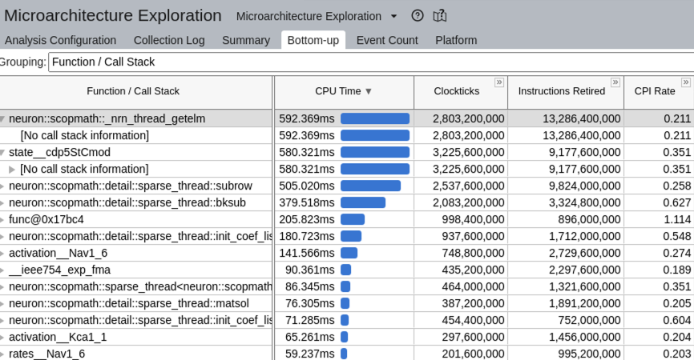
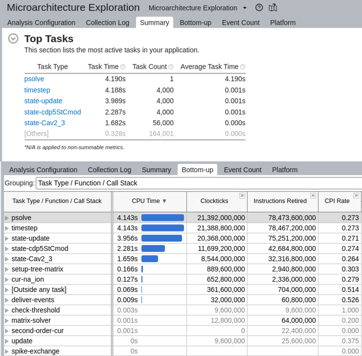
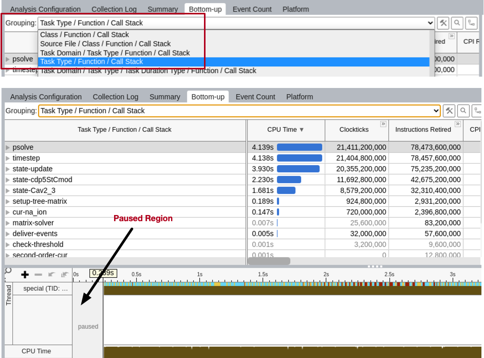
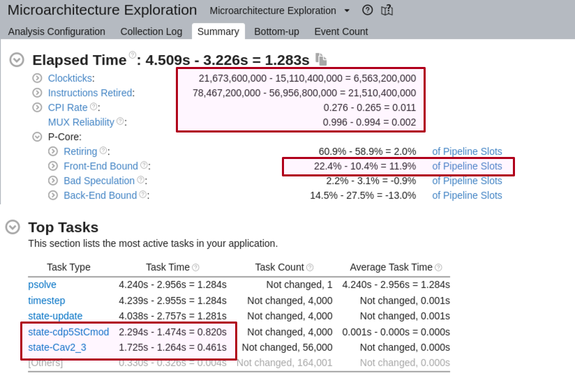
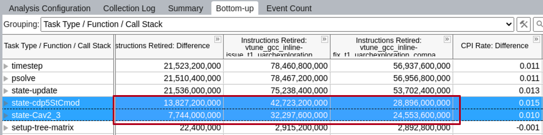
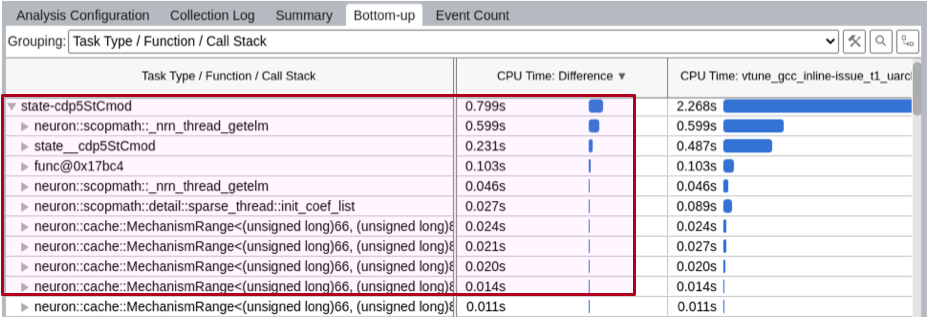
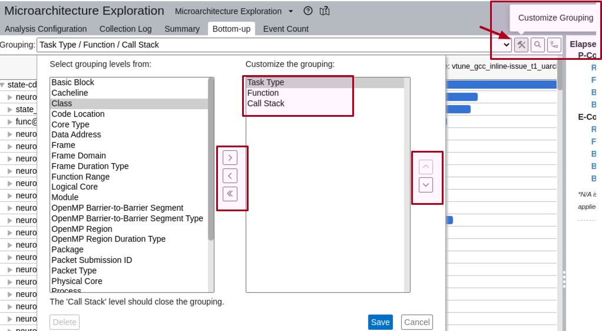
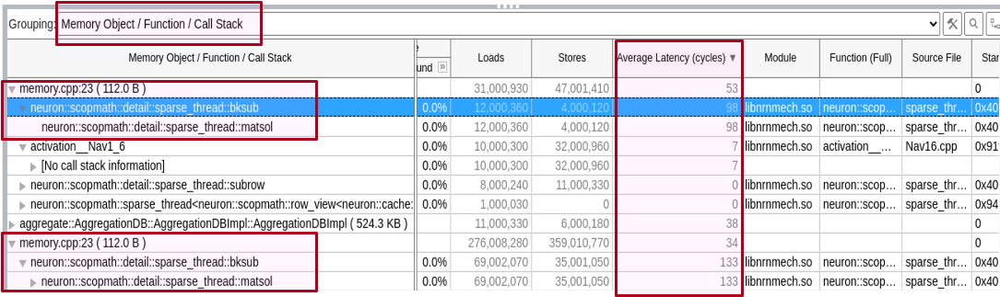
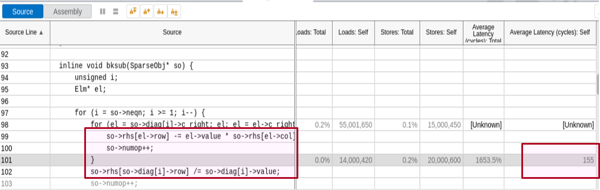

Diagnosis and Debugging
Disorganized and incomplete but here is a place to put some sometimes hard-won hints for Diagnosis
Debugging is as close as I get to application of the scientific method. From reality not corresponding to expectation, a hypothesis, or wild guess based on what is already known about the lack of correspondence, is used to generate a computational experiment such that result vs prediction inspires generation of a more detailed hypothesis with a now more obvious experiment that focuses attention more on the underlying problem.
Segfault and crash.
Begin with GDB to quickly find where the segfault or crash occurred. If the underlying cause is resistent to variable inspection, e.g. corrupted memory by unknown other program statements having nothing to do with what is going on the location of the crash, Valgrind is an extremely powerful tool, but at the cost of one or two orders of magnitude slowdown in running the program. If valgrind is too slow and you cannot reduce the size or simulation time while continuing to experience the error, it may be worthwhile to look into LLVM address sanitizer.
NaN or Inf values
Use n.nrn_feenableexcept(1) to generate floating point exception for DIVBYZERO, INVALID, OVERFLOW, exp(700). GDB can then be used to show where the SIGFPE occurred.
Different results with different nhost or nthread.
What is the gid and spiketime of the earliest difference? Use ParallelContext.prcellstate for that gid at various times before spiketime to see why and when the prcellstate files become different. Time 0 after initialization is often a good place to start.
GDB
If you normally run with python args and get a segfault…
Build NEURON with -DCMAKE_BUILD_TYPE=Debug. This avoids
optimization so that all local variables are available for inspection.
gdb `pyenv which python`
run args
bt # backtrace
There are many gdb tutorials and reference materials. For mac, lldb is available. See https://lldb.llvm.org/use/map.html
Particularly useful commands are bt (backtrace), p (print), b (break), watch,
c (continue), run, n (next)
E.g watch -l ps->osrc_ to watch a variable outside the local scope where
the PreSyn is locally declared.
GDB and MPI
If working on a personal computer (not a cluster) and a small number of ranks, using mpirun to launch a small number of terminals that run serial gdb has proven effective.
mpirun -np 4 xterm -e gdb `pyenv which python`
The rr debugger
As a complement to GDB, one can use the rr debugger to enhance the debugging experience. Running is as simple as:
rr record <executable> <args>
This should record a snapshot, which rr reports:
...
rr: Saving execution to trace directory `<path>/.local/share/rr/nrniv-2'.
...
which can later be replayed deterministically using:
rr replay <path to trace directory>
You can also bundle all of the dependencies of the executable using:
rr pack <path to trace directory>
after which you can send that directory (for instance, as a compressed archive) to other developers for portable and reliable debugging.
Valgrind
Extremely useful in debugging memory errors and memory leaks.
With recent versions of Valgrind (e.g. 3.17) and Python (e.g. 3.9) the
large number of Invalid read... errors which obscure the substantive errors,
can be eliminated with export PYTHONMALLOC=malloc
export PYTHONMALLOC=malloc
valgrind `pyenv which python` -c 'from neuron import n'
==47683== Memcheck, a memory error detector
==47683== Copyright (C) 2002-2017, and GNU GPL'd, by Julian Seward et al.
==47683== Using Valgrind-3.17.0 and LibVEX; rerun with -h for copyright info
==47683== Command: /home/hines/.pyenv/versions/3.9.0/bin/python -c from\ neuron\ import\ h
==47683==
==47683==
==47683== HEAP SUMMARY:
==47683== in use at exit: 4,988,809 bytes in 25,971 blocks
==47683== total heap usage: 344,512 allocs, 318,541 frees, 52,095,055 bytes allocated
==47683==
==47683== LEAK SUMMARY:
==47683== definitely lost: 1,991 bytes in 20 blocks
==47683== indirectly lost: 520 bytes in 8 blocks
==47683== possibly lost: 2,971,659 bytes in 19,446 blocks
==47683== still reachable: 2,014,639 bytes in 6,497 blocks
==47683== of which reachable via heuristic:
==47683== newarray : 96,320 bytes in 4 blocks
==47683== suppressed: 0 bytes in 0 blocks
==47683== Rerun with --leak-check=full to see details of leaked memory
==47683==
==47683== For lists of detected and suppressed errors, rerun with: -s
==47683== ERROR SUMMARY: 0 errors from 0 contexts (suppressed: 0 from 0)
With respect to memory leaks, we are most interested in keeping the
definitely lost: 1,991 bytes in 20 blocks to as low a value as possible
and especially fix memory leaks that increase when code is executed
multiple times. To this end, the useful valgrind args are
--leak-check=full --show-leak-kinds=definite
Valgrind + gdb
valgrind --vgdb=yes --vgdb-error=0 `pyenv which python` test.py
Valgrind will stop with a message like:
==31925== TO DEBUG THIS PROCESS USING GDB: start GDB like this
==31925== /path/to/gdb /home/hines/.pyenv/versions/3.7.6/bin/python
==31925== and then give GDB the following command
==31925== target remote | /usr/local/lib/valgrind/../../bin/vgdb --pid=31925
==31925== --pid is optional if only one valgrind process is running
In another shell, start GDB:
gdb `pyenv which python`
Then copy/paste the above ‘target remote’ command to gdb:
target remote | /usr/local/lib/valgrind/../../bin/vgdb --pid=31925
Every press of the ‘c’ key in the gdb shell will move to the location of the next valgrind error.
Sanitizers
The AddressSanitizer (ASan), LeakSanitizer (LSan), ThreadSanitizer (TSan)
and UndefinedBehaviorSanitizer (UBSan) are a collection of tools
that rely on compiler instrumentation to catch dangerous behaviour at runtime.
Compiler support is widespread but not ubiquitous, but both Clang and GCC
provide support.
They are all enabled by passing extra compiler options (typically
-fsanitize=XXX), and can be steered at runtime using environment variables
(typically {...}SAN_OPTIONS=...).
ASan in particular requires that its runtime library is loaded very early during
execution – this is typically not a problem if you are directly launching an
executable that has been built with ASan enabled, but more care is required if
the launched executable was not built with ASan.
The typical example of this case is loading NEURON from Python, where the
python executable is not built with ASan.
As of #1842, the NEURON
build system is aware of ASan, LSan and UBSan, and it tries to configure the
sanitizers correctly based on the NRN_SANITIZERS CMake variable.
In #2034 this was extended
to TSan via -DNRN_SANITIZERS=thread, and support for GCC was added.
For example, cmake -DNRN_SANITIZERS=address,leak ... will enable ASan and
LSan, while -DNRN_SANITIZERS=undefined will enable UBSan.
Not all combinations of sanitizers are possible, so far ASan, ASan+LSan, TSan
and UBSan have been tested with Clang.
Support for standalone LSan should be possible without major difficulties, but
is not yet implemented.
Depending on your system, you may also need to set the LLVM_SYMBOLIZER_PATH
variable to point to the llvm-symbolizer executable matching your Clang.
On systems where multiple LLVM versions are installed, such as Ubuntu, this may
need to be the path to the actual executable named llvm-symbolizer and not the
path to a versioned symlink such as llvm-symbolizer-14.
NEURON should automatically add the relevant compiler flags and configure the
CTest suite with the extra environment variables that are needed; ctest should
work as expected.
If NRN_SANITIZERS is set then an additional helper script will be written to
bin/nrn-enable-sanitizer under the build and installation directories.
This contains the relevant environment variable settings, and if --preload is
passed as the first argument then it also sets LD_PRELOAD to point to the
relevant sanitizer runtime library.
For example if you have a NEURON installation with sanitizers enabled, you might
use nrn-enable-sanitizer special -python path/to/script.py or
nrn-enable-sanitizer --preload python path/to/script.py (--preload required
because the python binary is (presumably) not linked against the sanitizer
runtime library.
If ctest or nrn-enable-sanitizer runs generate a sanitizer error like
AddressSanitizer: CHECK failed: asan_interceptors.cpp
it might be that the automatically determined LD_PRELOAD is insufficient.
(It happened to me with ubuntu 24.04 + gcc 13.2.0). In this case you
can temporarily set the NRN_OVERRIDE_LD_PRELOAD environment variable before
running cmake. In my case,
NRN_OVERRIDE_LD_PRELOAD="$(realpath "$(gcc -print-file-name=libasan.so)"):$(realpath "$(gcc -print-file-name=libstdc++.so)")" cmake ... sufficed.
LSan, TSan and UBSan support suppression files, which can be used to prevent
tests failing due to known issues.
NEURON includes a suppression file for TSan under .sanitizers/thread.supp and
one for UBSan under .sanitizers/undefined.supp in the GitHub repository, no
LSan equivalent exists for the moment.
Note that LSan and MPI implementations typically do not play nicely together, so if you want to use LSan with NEURON, you may need to disable MPI or add a suppression file that is tuned to your MPI implementation.
Similarly, TSan does not work very well with MPI and (especially) OpenMP implementations that were not compiled with TSan instrumentation (which they are typically not).
The GitHub Actions CI for NEURON at the time of writing includes three jobs
using Ubuntu 22.04: ASan (but not LSan) using Clang 14, UBSan using Clang 14,
and TSan using GCC 12.
In addition, there is a macOS-based ASan build using AppleClang, which has the
advantage that it uses libc++ instead of libstdc++.
NMODL supports the sanitizers in a similar way, but this has to be enabled
explicitly: -DNRN_SANITIZERS=undefined will also compile NMODL code with UBSan
enabled.
Profiling and performance benchmarking
NEURON has recently gained built-in support for performance profilers. Many modern profilers provide APIs for instrumenting code. This allows the profiler to enable timers or performance counters and store results into appropriate data structures. For implementation details of the generic profiler interface check src/utils/profile/profiler_interface.h NEURON now supports following profilers:
*to use this profiler some additional changes to the CMake files might be needed.
Instrumentation
Many performance-critical regions of the NEURON codebase have been instrumented for profiling. The existing regions have been given the same names as in CoreNEURON to allow side-by-side comparision when running simulations with and without CoreNEURON enabled. More regions can easily be added into the code in one of two ways:
using calls to
phase_begin(),phase_end()
void some_function() {
nrn::Instrumentor::phase_begin("some_function");
// code to be benchmarked
nrn::Instrumentor::phase_end("some_function");
}
using scoped automatic variables
void some_function() {
// unrelated code
{
nrn::Instrumentor::phase p("critical_region");
// code to be benchmarked
}
// more unrelated code
}
Note: Don’t forget to include the profiler header in the respective source files.
Running benchmarks
To enable a profiler, one needs to rebuild NEURON with the appropriate flags set. Here is how one would build NEURON with Caliper enabled:
mkdir build && cd build
cmake .. -DNRN_ENABLE_PROFILING=ON -DNRN_PROFILER=caliper -DCMAKE_PREFIX_PATH=/path/to/caliper/install/prefix -DNRN_ENABLE_TESTS=ON
cmake --build . --parallel
or if you are building CoreNEURON standalone:
mkdir build && cd build
cmake .. -DCORENRN_ENABLE_CALIPER_PROFILING=ON -DCORENRN_ENABLE_UNIT_TESTS=ON
cmake --build . --parallel
in both cases you might need to add something like /path/to/caliper/share/cmake/caliper to the CMAKE_PREFIX_PATH variable to help CMake find your installed version of Caliper.
Now, one can easily benchmark the default ringtest by prepending the proper Caliper environment variable, as described here.
$ CALI_CONFIG=runtime-report,calc.inclusive nrniv ring.hoc
NEURON -- VERSION 8.0a-693-gabe0abaac+ magkanar/instrumentation (abe0abaac+) 2021-10-12
Duke, Yale, and the BlueBrain Project -- Copyright 1984-2021
See http://neuron.yale.edu/neuron/credits
Path Min time/rank Max time/rank Avg time/rank Time %
psolve 0.145432 0.145432 0.145432 99.648498
spike-exchange 0.000002 0.000002 0.000002 0.001370
timestep 0.142800 0.142800 0.142800 97.845079
state-update 0.030670 0.030670 0.030670 21.014766
state-IClamp 0.001479 0.001479 0.001479 1.013395
state-hh 0.002913 0.002913 0.002913 1.995957
state-ExpSyn 0.002908 0.002908 0.002908 1.992531
state-pas 0.003067 0.003067 0.003067 2.101477
update 0.003941 0.003941 0.003941 2.700332
second-order-cur 0.002994 0.002994 0.002994 2.051458
matrix-solver 0.006994 0.006994 0.006994 4.792216
setup-tree-matrix 0.062940 0.062940 0.062940 43.125835
cur-IClamp 0.003172 0.003172 0.003172 2.173421
cur-hh 0.007137 0.007137 0.007137 4.890198
cur-ExpSyn 0.007100 0.007100 0.007100 4.864846
cur-k_ion 0.003138 0.003138 0.003138 2.150125
cur-na_ion 0.003269 0.003269 0.003269 2.239885
cur-pas 0.007921 0.007921 0.007921 5.427387
deliver-events 0.013076 0.013076 0.013076 8.959540
net-receive-ExpSyn 0.000021 0.000021 0.000021 0.014389
spike-exchange 0.000037 0.000037 0.000037 0.025352
check-threshold 0.003804 0.003804 0.003804 2.606461
finitialize 0.000235 0.000235 0.000235 0.161020
spike-exchange 0.000002 0.000002 0.000002 0.001370
setup-tree-matrix 0.000022 0.000022 0.000022 0.015074
cur-hh 0.000003 0.000003 0.000003 0.002056
cur-ExpSyn 0.000001 0.000001 0.000001 0.000685
cur-IClamp 0.000001 0.000001 0.000001 0.000685
cur-k_ion 0.000001 0.000001 0.000001 0.000685
cur-na_ion 0.000002 0.000002 0.000002 0.001370
cur-pas 0.000002 0.000002 0.000002 0.001370
gap-v-transfer 0.000003 0.000003 0.000003 0.002056
Running GPU benchmarks
Caliper can also be configured to generate NVTX annotations for instrumented code regions, which is useful for profiling GPU execution using NVIDIA’s tools.
In a GPU build with Caliper support (-DCORENRN_ENABLE_GPU=ON -DNRN_ENABLE_PROFILING=ON -DNRN_PROFILER=caliper), you can enable NVTX annotations at runtime by adding nvtx to the CALI_CONFIG environment variable.
A complete prefix to profile a CoreNEURON process with NVIDIA Nsight Systems could be:
nsys profile --env-var NSYS_NVTX_PROFILER_REGISTER_ONLY=0,CALI_CONFIG=nvtx,OMP_NUM_THREADS=1 --stats=true --cuda-um-gpu-page-faults=true --cuda-um-cpu-page-faults=true --trace=cuda,nvtx,openacc,openmp,osrt --capture-range=nvtx --nvtx-capture=simulation <exe>
where NSYS_NVTX_PROFILER_REGISTER_ONLY=0 is required because Caliper does not use NVTX registered string APIs. The <exe> command is likely to be something similar to
# with python
path/to/x86_64/special -python your_sim.py
# or, with hoc
path/to/x86_64/special your_sim.hoc
# or, if you are executing coreneuron directly
path/to/x86_64/special-core --datpath path/to/input/data --gpu --tstop 1
You may like to experiment with setting OMP_NUM_THREADS to a value larger than
1, but the profiling tools can struggle if there are too many CPU threads
launching GPU kernels in parallel.
For a more detailed analysis of a certain kernel you can use NVIDIA Nsight Compute. This is a kernel profiler for applications executed on NVIDIA GPUs and supports the OpenACC and OpenMP backends of CoreNEURON. This tool provides more detailed information in a nice graphical environment about the kernel execution on the GPU including metrics like SM throughput, memory bandwidth utilization, automatic roofline model generation, etc. To provide all this information the tool needs to rerun the kernel you’re interested in multiple times, which makes execution ~20-30 times slower. For this reason we recommend running first Caliper with Nsight Systems to find the name of the kernel you’re interested in and then select on this kernel for analysis with Nsight Compute. In case you’re interested in multiple kernels you can relaunch Nsight Compute with the other kernels separately.
To launch Nsight Compute you can use the following command:
ncu -k <kernel_name> --profile-from-start=off --target-processes all --set <section_set> <exe>
where
kernel_name: The name of the kernel you want to profile. You may also provide a regex withregex:<name>.section_set: Provides set of sections of the kernel you want to be analyzed. To get the list of sections you can runncu --list-sets.
The most commonly used is detailed which provides most information about the kernel execution and full which provides all the details
about the kernel execution and memory utilization in the GPU but takes more time to run.
For more information about Nsight Compute options you can consult the Nsight Compute Documentation.
Notes:
CoreNEURON allocates a large number of small objects separately in CUDA managed memory to record the state of the Random123 pseudorandom number generator. This makes the Nsight Compute profiler very slow, and makes it impractical to use Nsight Systems during the initialization phase. If the Boost library is available then CoreNEURON will use a memory pool for these small objects to dramatically reduce the number of calls to the CUDA runtime API to allocate managed memory. It is, therefore, highly recommended to make Boost available when using GPU profiling tools.
Profiling With Intel Vtune
Intel VTune is a powerful performance analysis tool and the preferred choice for debugging on node performance issues on Intel platforms. VTune is especially handy when the exact issue and type of analysis needed are unclear. For example, should we focus on hotspots, examine thread imbalance, analyze memory accesses, or collect some hardware counters? Intel VTune offers a variety of such detailed analysis types, making it easy to switch between them as needed. Additionally, VTune has a performance profile comparison feature, simplifying the analysis of different runs.
There is no one recipe for using Intel VTune, as different projects have different needs. Depending on the issue to analyze, one might need to configure the experiment in a specific way. However, here are some general instructions and tips to get started with using Intel VTune with NEURON.
Using Caliper VTune Service
If we have installed NEURON with the standard build configuration (e.g. -DCMAKE_BUILD_TYPE=RelWithDebInfo) and run
Vtune with a standard analysis like:
vtune -collect uarch-exploration --no-summary -result-dir=nrn_vtune_result x86_64/special -python model.py
and then visualize the results using:
vtune-gui nrn_vtune_result &
In the Bottom-up analysis, we should see output like this:

This is the expected output, but there are some issues or inconveniences with using the profile in this way:
The profile will include information from both the model building phase and the simulation phase. While one can
Zoom and Filter by Selection, the UI is not fluid or user-friendly for such selections.As Vtune is sampling-based, we have functions from the entire execution, making it inconvenient to find the context in which they are called. Importantly, as we have seen in the Caliper profile, we would like to have them grouped in NEURON’s terminology and according to hierarchy they are called e.g. “psolve”, “timestep”, “spike-exchange”, “state-update”, “hh-state”, etc.
This is where Caliper can help us! It uses the Instrumentation and Tracing Technology API, i.e., ittnotify.h,
which we typically use to pause/resume profiling but additionally uses the Task API
to mark all our Caliper instrumentation regions with __itt_task_begin() and __itt_task_end().
Because of this, all our Caliper instrumentations now nicely appear in Intel Vtune in the views like Summary, Bottom-up, etc.

So let’s look at how to build NEURON for Vtune Analysis with Caliper and how to profile execution with various analysis.
Building NEURON for Vtune Analysis with Caliper
The first step is to install Caliper with Intel VTune support. You can install Caliper
without Spack, but if you are a Spack user, note that the vtune variant in Caliper was added in May 2024. Therefore,
ensure you are using a newer version of Spack and have the +vtune variant activated.
Once Caliper is available with Vtune support, we can build NEURON in a regular way:
cmake .. \
-DNRN_ENABLE_PROFILING=ON \
-DNRN_PROFILER=caliper \
-DCMAKE_PREFIX_PATH=/path/to/caliper/install/prefix \
-DCMAKE_BUILD_TYPE=RelWithDebInfo \
-DCMAKE_CXX_FLAGS="-fno-omit-frame-pointer" \
-DCMAKE_INSTALL_PREFIX=/path/to/install
make -j && make install
We have additionally specified -fno-omit-frame-pointer CXX flag which helps profiler to to accurately track function calls and execution paths.
Running NEURON With Vtune And Caliper
Once NEURON is installed, we can now run profiling with Caliper’s Vtune service
by setting CALI_SERVICES_ENABLE=vtune environmental variable:
export CALI_SERVICES_ENABLE=vtune
and then launch Vtune profiling as:
vtune -start-paused -collect uarch-exploration --no-summary -result-dir=nrn_vtune_result x86_64/special -python model.py
vtune-gui nrn_vtune_result &
Note that we have used -start-paused CLI option so that VTune profiling will be disabled until our Caliper instrumentation
activates the recording for the simulation phase (i.e., ignoring the model building part). The highlighted pause
region should indicate such time rane. When you open the analysis view, such as Bottom-up, make sure to change Grouping to
Task Type / Function / Call Stack as shown below:

Typical Vtune Analysis
From the available analysis, we might be inetrested in performance-snapshot, hotspots, uarch-exploration, memory-access,
threading and hpc-performance. We can get information about specific specific collenction type using:
vtune -help collect
or
vtune -help collect uarch-exploration
Identifying Hotspots In A Model
Hotspots analysis is one of the most basic and essential types of analysis in Intel VTune. It helps pinpoint performance bottlenecks by highlighting sections of the code where the application spends a significant amount of time. Although Caliper’s output already aids in identifying hotspots, there are instances where we might encounter unknown performance issues. In such cases, hotspot analysis is invaluable. By employing sampling-based mechanisms, it provides insights into what else might be contributing to the application’s runtime.
In order to run this analysis, we use the same CLI syntax as before:
vtune -start-paused -collect hotspots --no-summary -result-dir=nrn_vtune_result x86_64/special -python model.py
Comparing Runtime of Two Different Executions
In certain situations, we want to compare two changesets/commits/versions or just two different builds to find out what is causing the difference in execution time. See the performance regression discussed in #2787.
In such situations, we first need to select the analysis type that is relevant for comparison. For example, if we need to
find out which functions are causing the difference in execution time, then hotspot analysis will be sufficient. But,
if we want to determine why a particular function in one build or commit is slower than in another commit or build, then we
might need to deep dive into hardware counter analysis (e.g., to compare cache misses, instructions retired, etc). In this
case, we might need to select the uarch-exploration analysis type.
To perform such a comparison, we do two runs with two different executions and generate profiles in two different directories:
vtune -start-paused -collect uarch-exploration --no-summary -result-dir=nrn_vtune_result_build1 build1/x86_64/special -python model.py
vtune -start-paused -collect uarch-exploration --no-summary -result-dir=nrn_vtune_result_build2 build2/x86_64/special -python model.py
Once we have profile results, we can open them in comparison view using vtune-gui:
vtune-gui nrn_vtune_result_build1 nrn_vtune_result_build2
As we have NEURON code regions and mechanisms functions annotated, they will appear as tasks, and the comparison will already be helpful to give a first impression of the differences between the two executions:

In this example, we can see the differences in execution time, and observing the difference in instruction count is already helpful. The Top Tasks region shows which tasks/functions are contributing to the biggest difference.
We can then dive deeper into the Bottom-up analysis view and look into various hardware counter details. We can do the same in Event Count
view. Note that VTune comes with hundreds of counters, which can be a bit overwhelming! What you want to look at depends on the problem you
are trying to investigate. In the example below, we are simply comparing the instructions retired. Notice the Grouping that we mentioned earlier:

We can further expand a specific task. As our grouping includes Call Stack context, we should be able to see everything that is happening inside that task:

Importantly, note that we can change the Grouping as per the view we would like to see! In the screenshot below, you can see how we can do that:

Identifying False Sharing
False sharing is the situation where multiple threads update distinct elements that reside on the same cache line, causing performance degradation due to repeated cache invalidations.
For a quite some time, Intel VTune has documented how to identify such situations. You can see the Cookbook example
here or older tutorials like
this one. In short, we need to find out memory
objects where access latencies are significantly higher. To facilitate such investigations, VTune provides an analysis type memory-access.
We can configure this analysis using the CLI as follows:
taskset -c 0-7 vtune -collect memory-access \
-knob analyze-mem-objects=true -knob mem-object-size-min-thres=1 -knob dram-bandwidth-limits=true \
-start-paused -result-dir=nrn_vtune_result x86_64/special -python model.py
Here we specify additional parameters analyze-mem-objects=true and mem-object-size-min-thres=1
to track and analyze memory objects larger than 1 byte. Additionally, we use taskset -c 0-7
to assign threads to specific cores for consistent performance profiling results.
Once we have profile data, we can examine access latencies for different memory objects. In the
example below, we view the Bottom-up pane with Grouping set to Memory Object / Function / Call Stack:

Here, we observe significantly higher access latencies in the bksub() function from sparse_thread.hpp.
In order to understand the exact code location, we can double click the function name and it will takes us to the corresponding code section:

The high latencies are attributed to SparseObj objects. This suggests a need to revisit how
SparseObj objects are allocated, stored and updated during runtime.
It’s important to note that higher latencies do not necessarily indicate false sharing. For instance, indirect-memory accesses with a strided pattern could lead to increased latencies. One should examine how the memory object is used within a function to determine if false sharing is a potential issue. Additionally, comparing access latencies with scenarios like single-threaded execution or versions without such issues can provide further insights.
Using LIKWID With NEURON
As described in the previous section, Intel VTune is a powerful tool for node-level performance analysis. However, we might need alternative options like LIKWID profiling tools in scenarios such as:
VTune is not available due to non-Intel CPUs or lack of necessary permissions.
We prefer to precisely mark the code regions of interest rather than using a sampling-based approach.
The raw events/performance counters shown by VTune are overwhelming, and we want high-level metrics that typically used in HPC/Scientific Computing.
Or simply we want to cross-check VTune’s results with another tool like LIKWID to ensure there are no false positives.
LIKWID offers a comprehensive set of tools for performance measurement on HPC platforms. It supports Intel, AMD, and ARM CPUs. However, as it is not vendor-specific, it may lack support for specific CPUs (e.g., Intel Alder Lake). Despite this, LIKWID is still a valuable tool. Let’s quickly see how we can use LIKWID with NEURON.
We assume LIKWID is installed with the necessary permissions (via accessDaemon or Linux perf mode).
Usage of LIKWID is covered in multiple other tutorials like this and this.
Here, we focus on its usage with NEURON.
LIKWID can measure performance counters on any binary like NEURON. For example, in the execution below,
we measure metrics from FLOPS_DP LIKWID group, i.e., double precision floating point related metrics:
$ likwid-perfctr -C 0 -g FLOPS_DP ./x86_64/special -python test.py
--------------------------------------------------------------------------------
CPU name: Intel(R) Xeon(R) Gold 6140 CPU @ 2.30GHz
...
--------------------------------------------------------------------------------
Group 1: FLOPS_DP
+------------------------------------------+---------+------------+
| Event | Counter | HWThread 0 |
+------------------------------------------+---------+------------+
| INSTR_RETIRED_ANY | FIXC0 | 8229299612 |
| CPU_CLK_UNHALTED_CORE | FIXC1 | 3491693048 |
| CPU_CLK_UNHALTED_REF | FIXC2 | 2690601456 |
| FP_ARITH_INST_RETIRED_128B_PACKED_DOUBLE | PMC0 | 1663849 |
| FP_ARITH_INST_RETIRED_SCALAR_DOUBLE | PMC1 | 740794589 |
| FP_ARITH_INST_RETIRED_256B_PACKED_DOUBLE | PMC2 | 0 |
| FP_ARITH_INST_RETIRED_512B_PACKED_DOUBLE | PMC3 | - |
+------------------------------------------+---------+------------+
+----------------------+------------+
| Metric | HWThread 0 |
+----------------------+------------+
| Runtime (RDTSC) [s] | 1.4446 |
| Runtime unhalted [s] | 1.5181 |
| Clock [MHz] | 2984.7862 |
| CPI | 0.4243 |
| DP [MFLOP/s] | 515.0941 |
| AVX DP [MFLOP/s] | 0 |
| AVX512 DP [MFLOP/s] | 0 |
| Packed [MUOPS/s] | 1.1517 |
| Scalar [MUOPS/s] | 512.7906 |
| Vectorization ratio | 0.2241 |
+----------------------+------------+
In this execution, we see information like the total number of instructions executed and contributions from SSE, AVX2, and AVX-512 instructions.
But, in the context of NEURON model execution, this is not sufficient because the above measurements summarize the full execution, including model building and simulation phases. For detailed performance analysis, we need granular information. For example:
We want to compare hardware counters for phases like current update (
BREAKPOINT) vs. state update (DERIVATIVE) due to their different properties (memory-bound vs. compute-bound).We might want to analyze the performance of a specific MOD file and it’s kernels.
This is where LIKWID’s Marker API comes into play. Currently, Caliper doesn’t integrate LIKWID as a service, but NEURON’s profiler interface supports enabling LIKWID markers via the same Instrumentor API.
Building NEURON With LIKWID Support
If LIKWID is already installed correctly with the necessary permissions, enabling LIKWID support into NEURON is not difficult:
cmake .. \
-DNRN_ENABLE_PROFILING=ON \
-DNRN_PROFILER=likwid \
-DCMAKE_PREFIX_PATH=<likwid-install-prefix>/share/likwid \
-DCMAKE_INSTALL_PREFIX=$(pwd)/install \
-DCMAKE_BUILD_TYPE=RelWithDebInfo
make -j && make install
Once built this way, LIKWID markers are added for the various simulation phases similar to those shown in Caliper and Vtune section.
Measurement with LIKWID
Measuring different metrics with LIKWID is easy, as seen earlier. By building LIKWID support via CMake, we now have enabled LIKWID markers
that help us see the performance counters for different phases of simulations. In the example below, we added the -m CLI option to enable markers:
$ likwid-perfctr -C 0 -m -g FLOPS_DP ./x86_64/special -python test.py
...
...
Region psolve, Group 1: FLOPS_DP
+-------------------+------------+
| Region Info | HWThread 0 |
+-------------------+------------+
| RDTSC Runtime [s] | 10.688310 |
| call count | 1 |
+-------------------+------------+
+------------------------------------------+---------+------------+
| Event | Counter | HWThread 0 |
+------------------------------------------+---------+------------+
| INSTR_RETIRED_ANY | FIXC0 | 5496569000 |
| CPU_CLK_UNHALTED_CORE | FIXC1 | 2753500000 |
| CPU_CLK_UNHALTED_REF | FIXC2 | 2111229000 |
| FP_ARITH_INST_RETIRED_128B_PACKED_DOUBLE | PMC0 | 489202 |
| FP_ARITH_INST_RETIRED_SCALAR_DOUBLE | PMC1 | 730000000 |
| FP_ARITH_INST_RETIRED_256B_PACKED_DOUBLE | PMC2 | 0 |
| FP_ARITH_INST_RETIRED_512B_PACKED_DOUBLE | PMC3 | - |
+------------------------------------------+---------+------------+
...
...
Region state-cdp5StCmod, Group 1: FLOPS_DP
+-------------------+------------+
| Region Info | HWThread 0 |
+-------------------+------------+
| RDTSC Runtime [s] | 0.353965 |
| call count | 400 |
+-------------------+------------+
+------------------------------------------+---------+------------+
| Event | Counter | HWThread 0 |
+------------------------------------------+---------+------------+
| INSTR_RETIRED_ANY | FIXC0 | 2875111000 |
| CPU_CLK_UNHALTED_CORE | FIXC1 | 1057608000 |
| CPU_CLK_UNHALTED_REF | FIXC2 | 810826000 |
| FP_ARITH_INST_RETIRED_128B_PACKED_DOUBLE | PMC0 | 380402 |
| FP_ARITH_INST_RETIRED_SCALAR_DOUBLE | PMC1 | 358722700 |
| FP_ARITH_INST_RETIRED_256B_PACKED_DOUBLE | PMC2 | 0 |
| FP_ARITH_INST_RETIRED_512B_PACKED_DOUBLE | PMC3 | - |
+------------------------------------------+---------+------------+
...
Region state-Cav2_3, Group 1: FLOPS_DP
+-------------------+------------+
| Region Info | HWThread 0 |
+-------------------+------------+
| RDTSC Runtime [s] | 0.002266 |
| call count | 400 |
+-------------------+------------+
...
...
Here, we see performance counters for the psolve region, which includes the full simulation loop,
and a breakdown into channel-specific kernels like state-cdp5StCmod and state-Cav2_3.
Avoiding Measurement Overhead with NRN_PROFILE_REGIONS
When profiling with Caliper, careful instrumentation can ensure that measuring execution does not incur significant overhead.
It’s important to avoid instrumenting very small code regions to minimize performance impact.
However, with LIKWID, starting and stopping measurement using high-level API like LIKWID_MARKER_START() and
LIKWID_MARKER_STOP() can introduce relatively high overhead, especially when instrumentation covers small code regions.
This is the case in NEURON as we instrument all simulation phases and individual mechanisms’ state and current update kernels.
In small models, such overhead could slow down execution by 10x.
To avoid this, NEURON provides an environment variable NRN_PROFILE_REGIONS to enable profiling for specific code regions.
For example, let’s assume we want to understand hardware performance counters for two phases:
psolve: entire simulation phasestate-hh: one specific state update phase where we callDERIVATIVEblock of thehh.modfile
These names are the same as those instrumented in the code using Instrumentor::phase API (see previous step).
We can specify these regions to profile as a comma-separated list via the NRN_PROFILE_REGIONS environment variable:
$ export NRN_PROFILE_REGIONS=psolve,state-hh
$ likwid-perfctr -C 0 -m -g FLOPS_DP ./x86_64/special -python test.py
Now, we should get the performance counter report only for these two regions with relatively small execution overhead:
Region psolve, Group 1: FLOPS_DP
+-------------------+------------+
| Region Info | HWThread 0 |
+-------------------+------------+
| RDTSC Runtime [s] | 10.688310 |
| call count | 1 |
+-------------------+------------+
+------------------------------------------+---------+------------+
| Event | Counter | HWThread 0 |
+------------------------------------------+---------+------------+
| INSTR_RETIRED_ANY | FIXC0 | 5496569000 |
| CPU_CLK_UNHALTED_CORE | FIXC1 | 2753500000 |
...
...
Region state-hh, Group 1: FLOPS_DP
+-------------------+------------+
| Region Info | HWThread 0 |
+-------------------+------------+
| RDTSC Runtime [s] | 0.180081 |
| call count | 400 |
+-------------------+------------+
+------------------------------------------+---------+------------+
| Event | Counter | HWThread 0 |
+------------------------------------------+---------+------------+
| INSTR_RETIRED_ANY | FIXC0 | 1341553000 |
| CPU_CLK_UNHALTED_CORE | FIXC1 | 540962900 |
...
NOTE: Currently, NEURON uses marker APIs
LIKWID_MARKER_START()andLIKWID_MARKER_STOP()from LIKWID. We should consider usingLIKWID_MARKER_REGISTER()API to reduce overhead and prevent incorrect report counts for tiny code regions.
Comparing LIKWID Profiles
Unlike VTune, LIKWID doesn’t support direct comparison of profile data. However, the powerful CLI allows us to select specific metrics for code regions, and since the profile results are provided as text output, comparing results from two runs is straightforward. For instance, the screenshot below shows FLOPS instructions side by side between two runs: